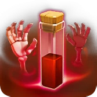

Skeleton Spell — Clash of Clans
Updated: 26 August 2026 · By the Goblins Farm team
The Skeleton Spell spawns a group of skeletons where it lands. They are weak and short-lived, which is precisely the point: they are a cheap, disposable distraction you can place anywhere on the map.
- Levels
- 8
- Housing space
- 1
- Radius
- 2.25 tiles
- Role
- Dark spell, summon
What it does
Skeletons appear at the target point and attack nearby buildings or troops. Individually they are negligible; collectively they absorb defensive fire and occupy defending troops for several valuable seconds.
How it is used
- Clan Castle luring. Drop it on the defending troops you have pulled out, and the skeletons hold them while your poison works.
- Distracting a single-target defence such as an Inferno Tower during a critical window.
- Cheap chip damage on the last few buildings when the timer is short.
Its value comes from being usable anywhere, instantly, without deployment position mattering. Very few things in an attack offer that.
Stats by level
| Level | Research cost | Research time | Town Hall |
|---|---|---|---|
| 1 | — | — | 3 |
| 2 | 11,000 Dark Elixir | 12 h | 10 |
| 3 | 17,000 Dark Elixir | 1 d | 10 |
| 4 | 25,000 Dark Elixir | 2 d | 11 |
| 5 | 40,000 Dark Elixir | 2 d 12 h | 12 |
| 6 | 50,000 Dark Elixir | 3 d | 12 |
| 7 | 75,000 Dark Elixir | 4 d | 13 |
| 8 | 135,000 Dark Elixir | 6 d | 15 |

Where these numbers come from. Read from Clash of Clans' own game files, client build 18.400.21. They are exact for that build and do not reflect anything released after it, so verify in game before committing an upgrade.
Game values are read from Supercell's own game files, reproduced as fan content under Supercell's Fan Content Policy. Goblins Farm is not affiliated with, endorsed, sponsored, or specifically approved by Supercell, and Supercell is not responsible for it.
 Frequently asked
Frequently asked
What is the Skeleton Spell used for?
Mostly as a disposable distraction. Dropped on lured Clan Castle troops it holds them in place while poison does the damage, and dropped near a single-target defence it buys your real army several seconds.
Are the skeletons strong?
No, individually they are negligible and short-lived. Their value is that they can be placed instantly anywhere on the map to absorb fire or occupy defending troops, which no other cheap option does.
 Keep reading
Keep reading
Goblins Farm is not affiliated with, endorsed by, sponsored by, or specifically approved by Supercell. Clash of Clans is a trademark of Supercell Oy. This material is unofficial fan content produced under Supercell's Fan Content Policy. Game values change with every update; always verify in-game before committing an upgrade.